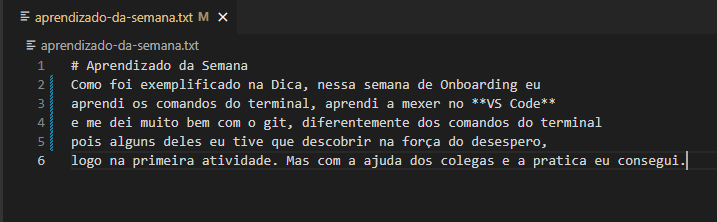
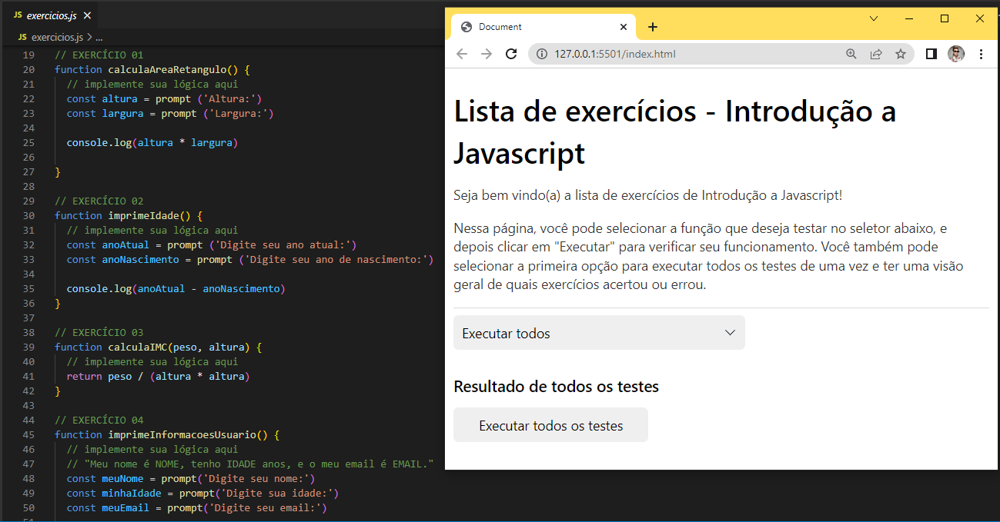
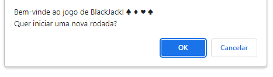
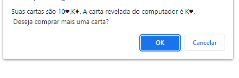
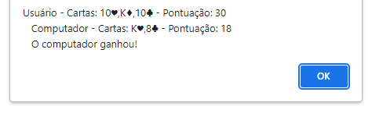

Projeto Onboarding
A primeira semana de aula, foi exclisiva para aprendermos sobre as plataformas, sites e aplicativos que iriamos usar no curso, para isso realizamos o primeiro projeto que consistia em criar um aquivo no VS Code, um relato breve sobre os aprendizados da semana. Tecnologias usadas: VS Code(Markdown).
Projeto Lista JS
Este projeto teve um nivél maior de complexidade, pois nós tinhamos que resolver exercicios testando-os em um site especifico. Era uma lista de exercícios sobre os conteúdos vistos de Javscript até aquele momento. Tecnologias usadas: Javscript(Variaveis, Operadores, Comparadores e Lógica de Programação, Strings, Arrays e Funções.)
Projeto Blackjack
Nesse projetos aplicamos todas as tecnologias de Javscript para criar um programa que imitasse o jogo Blackjack ou 21 como também é conhecido. Tecnologias usadas: Javscript(Variaveis, Operadores, Comparadores e Lógica de Programação, Strings, Arrays, Funções, Objetos, Condicionais, Laços, Callback e Funções de Arrays.)
  